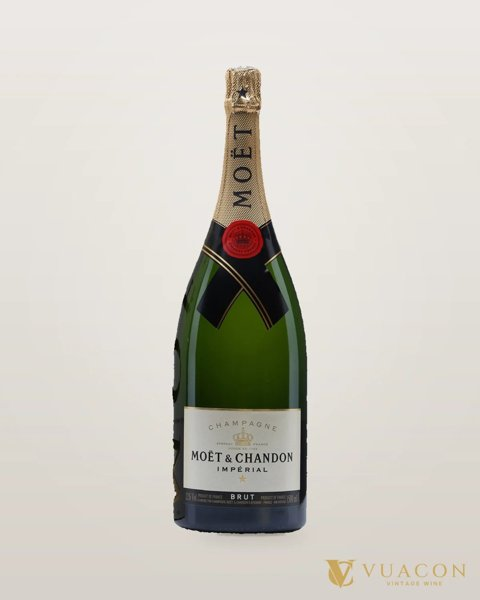
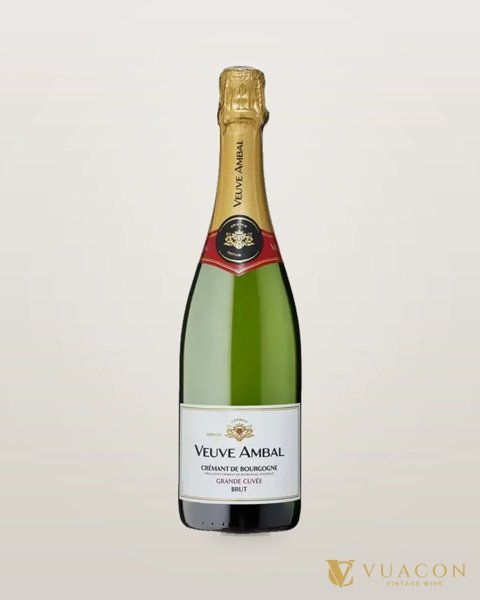

Vang sủi là vang có bọt do chính quá trình làm rượu sinh ra. Theo OIV (Tổ chức quốc tế về nho và rượu vang), khí CO2 trong vang sủi phải hoàn toàn có nguồn gốc bên trong, và áp suất dư trong chai ít nhất 3,5 bar ở 20°C (chai dưới 0,25 lít chỉ cần 3 bar). Vang bị bơm thêm khí từ ngoài vào là loại khác, OIV gọi là carbonated wine, không được tính là vang sủi. Champagne là một loại vang sủi, nhưng không phải chai vang sủi nào cũng là champagne.
Bọt trong chai vang sủi sinh ra thế nào?
Lên men là lúc men biến đường trong nho thành cồn và khí CO2. Với vang thường, khí ấy bay đi. Muốn có bọt, người làm rượu cho lên men thêm một lần nữa trong vật chứa kín để giữ khí lại trong rượu. OIV chia vang sủi theo đúng chỗ diễn ra lần lên men thứ hai đó: lên men lần hai trong chai, hoặc lên men lần hai trong bồn kín.
Lượng khí giữ lại không nhỏ. Comité Champagne cho biết áp suất trong một chai champagne khoảng 5 đến 6 bar, cỡ gấp ba áp suất lốp ô tô. Vì thế mà chai vang sủi dày, đáy lõm sâu, nút có lồng thép giữ lại.
Champagne, Prosecco, Crémant khác nhau ở đâu?
Champagne là tên một vùng ở Pháp. Vùng này được công nhận tên gọi xuất xứ (AOC) ngày 29/6/1936, nhưng chuyện giữ tên còn sớm hơn: năm 1845, theo đơn của một nhóm nhà Champagne, Toà phá án Pháp đã cấm một loại vang sủi dùng tên này. Ngày nay chỉ vang làm trong vùng, đúng luật vùng, mới được gọi là champagne. Luật vùng bắt buộc lên men lần hai trong chai; loại không ghi năm phải nằm hầm ít nhất 15 tháng, loại ghi năm ít nhất 36 tháng. Nhãn chỉ cần in chữ "Champagne", không cần thêm chữ AOC.

Prosecco là vang sủi của vùng đông bắc nước Ý, nằm giữa dãy Dolomites và biển Adriatic. Tài liệu kỹ thuật của hiệp hội Prosecco ghi lần lên men thứ hai làm trong bồn áp suất (autoclave), tức là nhánh "bồn kín" của OIV.
Crémant de Bourgogne là một tên gọi vùng của Bourgogne. Đây là vang sủi Pháp, có tên gọi xuất xứ hẳn hoi, nhưng không phải champagne. Nhìn nhãn là phân biệt được ngay: chữ to trên nhãn ghi Crémant de Bourgogne chứ không ghi Champagne.

Brut, Extra Dry, Demi-sec trên nhãn nghĩa là gì?
Với vang sủi, chữ nhỏ cạnh tên rượu cho biết độ ngọt, tính bằng gam đường mỗi lít. Theo OIV và tài liệu đọc nhãn của Comité Champagne:
| Chữ trên nhãn | Đường (g/l) |
|---|---|
| Extra Brut | dưới 6 |
| Brut | dưới 12 |
| Extra Dry | 12 đến 17 |
| Demi-sec | 32 đến 50 |
| Doux | trên 50 |
Chỗ hay nhầm là chữ Extra Dry. Nghe "rất khô" nhưng thực ra nó ngọt hơn Brut. Còn độ cồn thì gần như không đổi theo độ ngọt: Comité Champagne ghi champagne thường quanh 12%, xê dịch chừng 0,7% tuỳ loại, dù ngọt hay không.
Rót vang sủi thế nào cho đúng?
Comité Champagne khuyên phục vụ champagne ở 8–10°C. Khi cầm ly, đừng cầm phần trên: hơi ấm của tay làm rượu ấm lên, mùi xà phòng hay nước hoa trên tay cũng lẫn vào mùi rượu. Cầm chân ly, hoặc cầm đế ly như dân thử rượu chuyên nghiệp.
Gói lại thì chỉ cần nhớ ba thứ khi cầm một chai sủi: tên vùng to nhất trên nhãn là gì, bọt sinh ra trong chai hay trong bồn, và chữ chỉ độ ngọt nằm ở đâu trong bảng trên. Muốn so các chai sủi với vang đỏ, vang trắng, có thể xem danh mục vang của Vua Cồn, nơi chai nào cũng ghi rõ nước, vùng và độ cồn.
Còn câu hỏi ai thật sự nghĩ ra champagne, video dưới đây kể chuyện thầy tu Dom Pérignon và những gì sử sách ghi lại:
Xem trên YouTube: Dom Pérignon: ai thật sự phát minh champagne? · kênh @vuaconvn
Nguồn: OIV, International Code of Oenological Practices (2021); Comité Champagne, mục câu hỏi thường gặp và tài liệu "Understanding a Champagne label" (2024); Consorzio Prosecco, tài liệu kỹ thuật 2019; BIVB (hiệp hội vang Bourgogne).
Ghi chép trong sổ tay đọc nhãn của Vua Cồn.